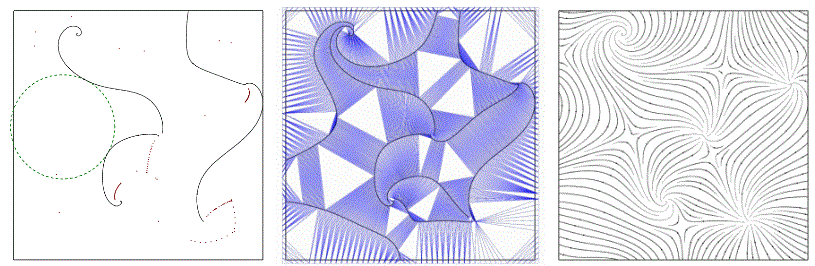
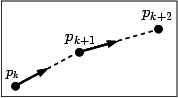
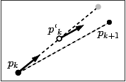

|
CGAL 6.2 - 2D Placement of Streamlines
|
Loading...
Searching...
No Matches
|
CGAL 6.2 - 2D Placement of Streamlines
|
This chapter describes the CGAL 2D streamline placement package. Basic definitions and notions are given in Section Definitions. Section Fundamental Notions gives a description of the integration process. Section Farthest Point Seeding Strategy provides a brief description of the algorithm. Section Implementation presents the implementation of the package, and Section Examples details two example placements.

Figure 90.1 The core idea of the algorithm is to integrate the streamlines from the center of the biggest empty cavities in the domain (left). A Delaunay triangulation of all the sample points is used to model the streamlines and the spaces within the domain (middle). A final result is shown (right).
In physics, a field is an assignment of a quantity to every point in space. For example, a gravitational field assigns a gravitational potential to each point in space.
Vector and direction fields are commonly used for modeling physical phenomena, where a direction and magnitude, namely a vector is assigned to each point inside a domain (such as the magnitude and direction of the force at each point in a magnetic field).
Streamlines are important tools for visualizing flow fields. A streamline* is a curve everywhere tangent to the field. In practice, a streamline is often represented as a polyline (series of points) iteratively elongated by bidirectional numerical integration started from a seed point, until it comes close to another streamline (according to a specified distance called the separating distance), hits the domain boundary, reaches a critical point or generates a closed path.
A valid placement of streamlines consists of saturating the domain with a set of tangential streamlines in accordance with a specified density, determined by the separating distance between the streamlines.
A streamline can be considered as the path traced by an imaginary massless particle dropped into a steady fluid flow described by the field. The construction of this path consists in the solving an ordinary differential equation for successive time intervals. In this way, we obtain a series of points \( p_k, 0<k<n\) which allow visualizing the streamline. The differential equation is defined as follows :
\[ \frac{dp}{dt} = v(p(t)), \ \ \ \ \ \ p(0) = p_0 \]
where p(t) is the position of the particle at time t, v is a function which assigns a vector value at each point in the domain (possibly by interpolation), and \( p_0\) is the initial position. The position after a given interval \( \Delta t\) is given by :
\[ p(t + \Delta t) = p(t) + \int_t^{t+\Delta t} v(p(t)) dt \]
Several numeric methods have been proposed to solve this equation. In this package, the Euler, and the Second Order Runge-Kutta algorithm are implemented.

Figure 90.2 Euler integrator.
This algorithm approximates the point computation by this formula
\[ p_{k+1} = p_k + hv(p_k) \]
where h specifies the integration step* (see Figure 90.2). The integration can be done forward (resp. backward) by specifying a positive (resp. negative) integration step h. The streamline is then constructed by successive integration from a seed point both forward and backward.

Figure 90.3 Runge-Kutta second order integrator (The empty circle represents the intermediate point, and the gray disk represents the Euler integrated point).
This method introduces an intermediate point \( p'_k\) between \( p_k\) and \( p_{k+1}\) to increase the precision of the computation (see Figure 90.3), where:
\[ \begin{array}{ccccc} p'_k & = & p_k & + & \frac{1}{2}hv(p_k) \\ p_{k+1} & = & p_k & + & hv(p'_k) \\ \end{array} \]
See [2] for further details about numerical integration.
The algorithm implemented in this package [1] consists of placing one streamline at a time by numerical integration starting farthest away from all previously placed streamlines.
The input of our algorithm is given by (i) a flow field, (ii) a density specified either globally, by the inverse of the ideal spacing distance, or locally by a density field, and (iii) a saturation ratio over the desired spacing required to trigger the seeding of a new streamline.
The input flow field is given by a discrete set of vectors or directions sampled within a domain, associated with an interpolation scheme (e.g. bilinear interpolation over a regular grid, or natural neighbor interpolation over an irregular point set to allow for an evaluation at each point coordinate within the domain).
The output is a streamline placement, represented as a list of streamlines. The core idea of our algorithm consists of placing one streamline at a time by numerical integration seeded at the farthest point from all previously placed streamlines.
The streamlines are approximated by polylines, whose points are inserted to a 2D Delaunay triangulation (see Figure 90.1). The empty circumscribed circles of the Delaunay triangles provide us with a good approximation of the cavities in the domain.
After each streamline integration, all incident triangles whose circumcircle diameter is larger (within the saturation ratio) than the desired spacing distance are pushed to a priority queue sorted by the triangle circumcircle diameter. To start each new streamline integration, the triangle with largest circumcircle diameter (and hence the biggest cavity) is popped out of the queue. We first test if it is still a valid triangle of the triangulation, since it could have been destroyed by a streamline previously added to the triangulation. If it is not, we pop another triangle out of the queue. If it is, we use the center of its circumcircle as seed point to integrate a new streamline.
Our algorithm terminates when the priority queue is empty. The size of the biggest cavity being monotonically decreasing, our algorithm guarantees the domain saturation.
Streamlines are represented as polylines, and are obtained by iterative integration from the seed point. A polyline is represented as a range of points. The computation is processed via a list of Delaunay triangulation vertices.
To implement the triangular grid, the class Delaunay_triangulation_2 is used. The priority queue used to store candidate seed points is taken from the Standard Template Library [3].
The first example illustrates the generation of a 2D streamline placement from a vector field defined on a regular grid.
File Stream_lines_2/stl_regular_field.cpp
The second example depicts the generation of a streamline placement from a vector field defined on a triangular grid.
File Stream_lines_2/stl_triangular_field.cpp